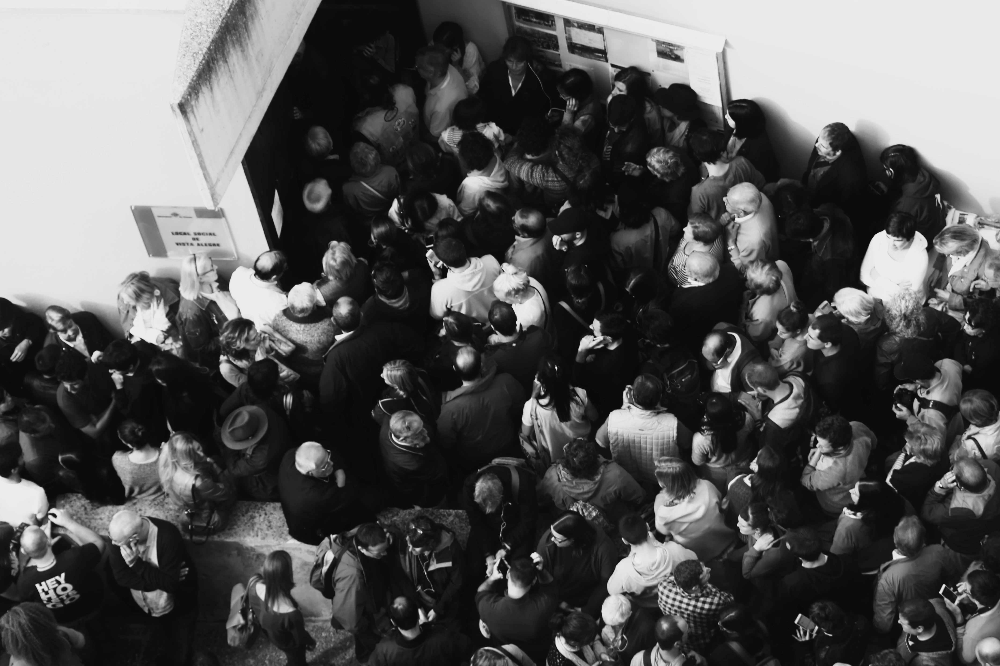
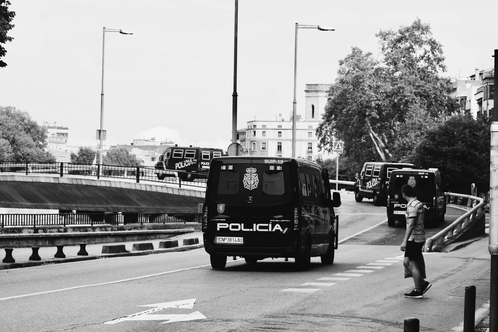
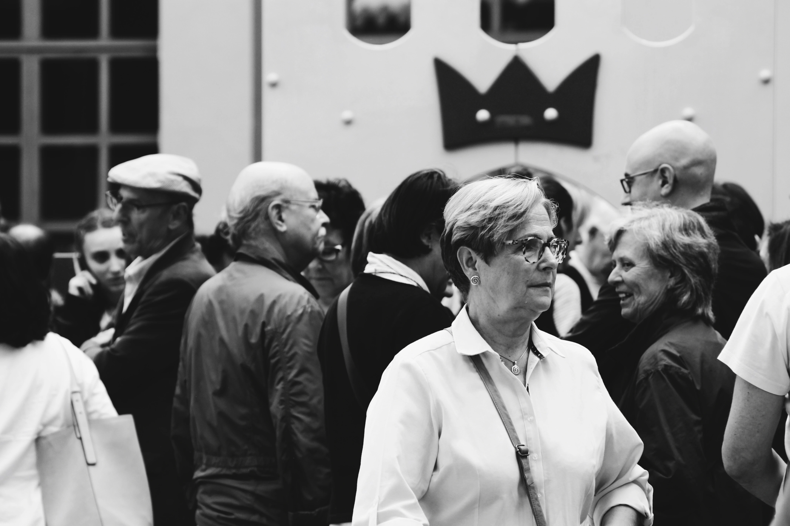
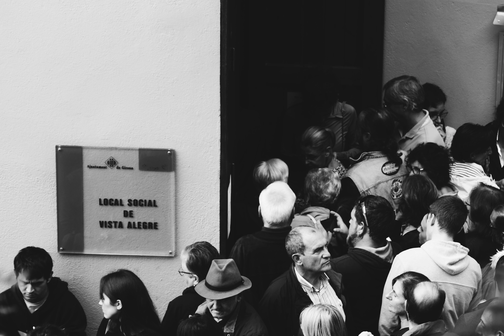
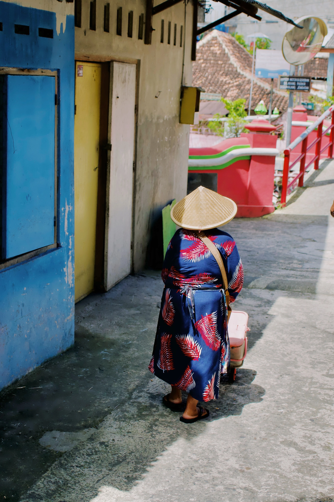
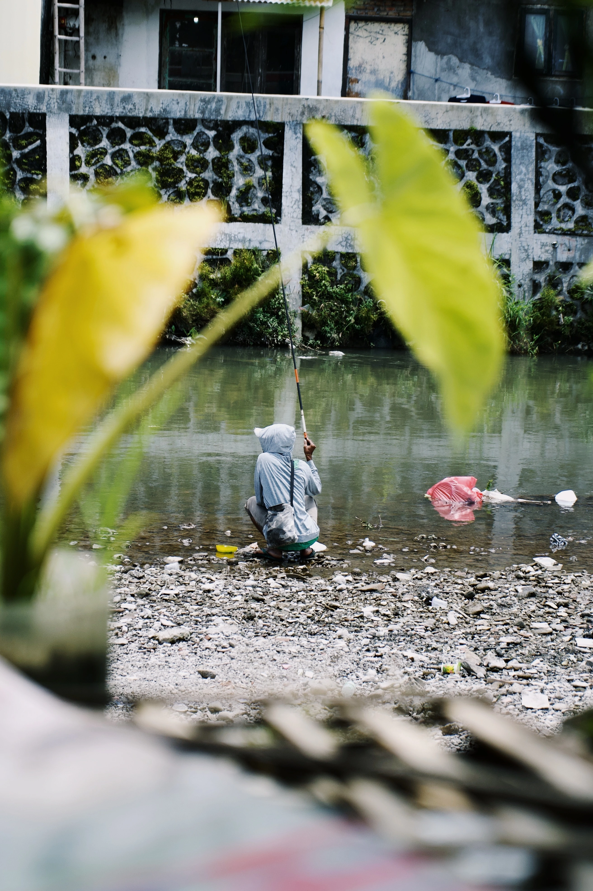
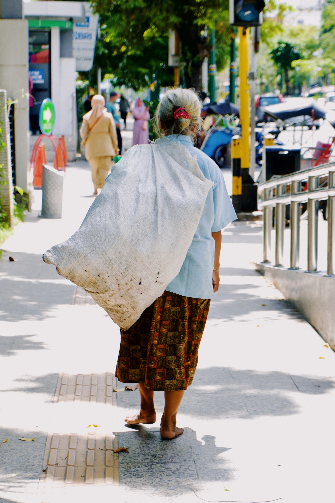
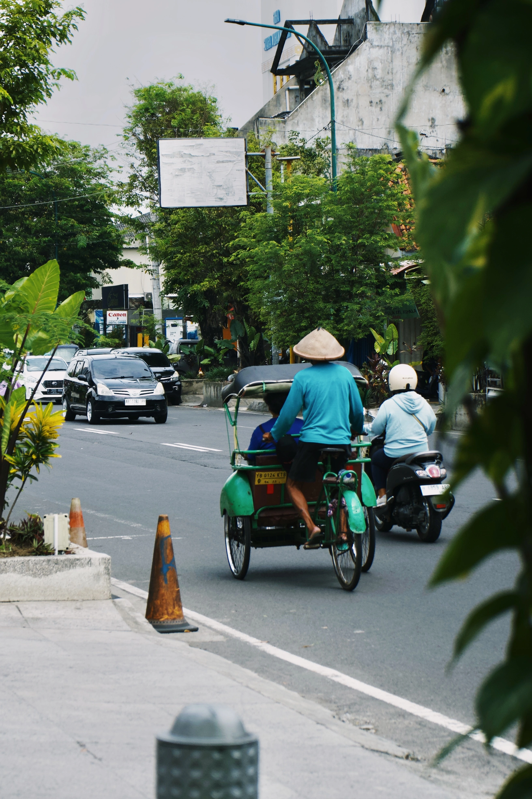

Perdre's en una ciutat per aconseguir captar-ne l'essència (2018)
En aquest reportatge volia buscar l'essència de Girona fent fotografia de carrer. La fotografia de carrer és una disciplina que requereix molta paciència i observació. Cal estar atent a tot el que passa al nostre voltant i captar aquells moments únics que es donen en el dia a dia. A continuació ensenyo 3 de les quals van ser les fotografies del treball, la conclusió del treball va ser que les fotografies que millor captaven l'essència de la ciutat eren aquelles que se'n podia apreciar una part de la ciutat sense coneixre-la massa. Les altres no és que no fòssin vàlides però capten l'essència d'una ciutat genèrica, una època.


1 d'Octubre (2017)
El 1 d'octubre de 2017 es va celebrar un referèndum d'autodeterminació a Catalunya. Aquesta jornada va ser marcada per la violència policial i les càrregues als col·legis electorals. Aquest reportatge volia captar l'essència d'aquell dia, la tensió i la violència que es va viure a Catalunya.
   Jogjakarta (2023)
Fotografia de carrer quan viatjo
   